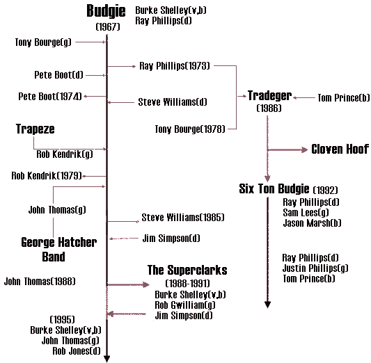
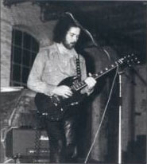
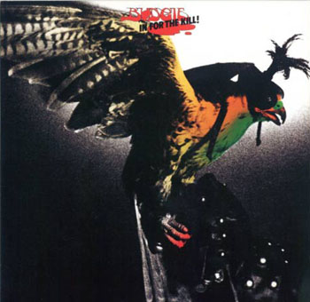
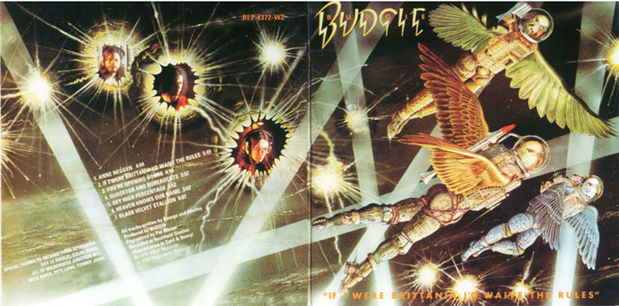
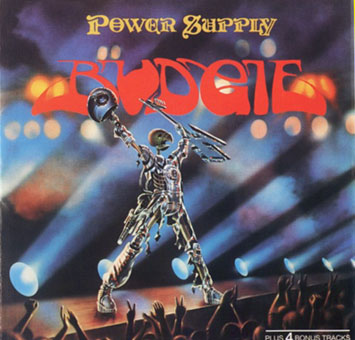
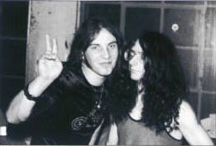

10th YBD Special Show of Prog Rock
일시 : 1996년 8월 3일 토요일 오후 2시 - 5시
장소 : 홍대앞 Freebird Phone: 02-333-2701(2)
참석자 :
김성우, 이훈구, 최창규, 장민수, 김남웅, 이윤직, 신동호
문희형, 맹경무, 강용호, 박경호, 김형석, 이소현, 김지인.
주제: Budgie Special, German Rock Special.
Budgie
이훈구(hglee@fdcl.kaist.ac.kr)
70년대는 수많은 전설이 꽃피어난 Rock 의 황금기였다. 60년대 Beatles 로부터 시작된 소위 Rock 의 르네상스 시대는 70년대 들
어와 Deep Purple, Led Zeppelin, Black Sabbath, Uriah Heep 등의 하드락 그룹들 뿐 아니라 Yes, Pink Floyd, King Crimson, Em
erson Lake and Palmer, Genesis 등 프로그래시브 락 그룹들의 활동에 의하여 전성기를 맞게 된다.
영국 남웨일즈의 Cardiff 에서 결성된 3인조 Underground Hard Rock 그룹 Budgie 는 1967년 결성된 이후 1971년 첫 앨범을 발표
한 이래 20년이 넘는 기간 활동한 대표적인 언더락 밴드라고 할 수 있다. 이들의 음악은 위에 열거한 여느 그룹과 같은 위대한
면을 갖고 있는 것은 아니다. 실제로 Budgie 야 말로 순수한 아마츄어들만으로 이루어진 말 그대로의 언더적인 성격이 매우 강한
그룹이다. 그렇기 때문에 이들의 음악은 어떤면에서는 순수하고 단순하면서도 사람의 마음을 잡아끄는 매력이 존재한다.
이들 음악의 특징은 몇년전 열광적인 인기를 얻었던 Thrash 적인 빠른 곡 전개, 높은 음색을 가진 Burke Shelley 의 보컬, 그리
고 무엇보다도 그룹의 전성시대를 이끌며 Budgie 만의 음색을 만들어내는 Tony Bourge 의 기타라고 할 수 있다. 음악의 영역은 H
ard Rock, Blues Rock, 약간의 Progressive 적인 요소를 갖고 있고 후반기에 이르면 NWOBHM 적인 면을 띠고 있다.
Budgi
e 는 현재도 Cardiff 에서 local band 로 활동하고 있는 듯 하고 8월에는 미국 Texas 의 San Antonio 에서의 공연도 예정되어 있
을 만큼 언더락 밴드로서는 비교적 성공한 경우에 속한다. 그들의 Studio 앨범들 역시 MCA, A&M 과 같은 메이져 레이블들에
서 발표되었다. 또한 Metallica, Iron Maiden, Soundgarden 과 같은 그룹들에서 이들의 곡들을 cover 한 경우도 있다.
1. Nude Disintegrating Parachutist Woman (Single Version) 4.07
from "An Escape of Anthology (The Definitive Anthology)" 1996
originally from the single "Crash Course In Brain Surgery/Nude Disintegrating Parachutist Woman" in 1971
이들의 1971년 데뷔 앨범에도 실려 있는 이곡은 원래 이 앨범에 앞선 데뷔 싱글에 실려있던 곡이다. 8분여에 이르는 정규앨범에
실린 곡과 중간 부분의 기타 솔로를 제외하고는 거의 다른점이 없다. 고음의 Shelley 의 보컬, 그리고 이들 초기에 나타나는 세
명의 일치된 합주가 Bourge 의 기타를 중심으로 어우러지는 멋진 곡이다.
2. Young Is A World 8.14
from "Squawk" 1972
Budgie 의 첫 두 앨범은 그들의 음색을 가장 잘 보여주는 classic 들이다. 특히 두 번째 앨범에 수록된 Rock Ballad 인 이곡은
여타 그룹들의 발라드곡에 비해 조금도 뒤쳐지지 않는 매우 아름다운 곡이다. 중반부에 나오는 Mellotron 소리도 귀를 즐겁게 만
들어주는 요소중의 하나이다.

3. Hammer and Tongs 6.58
from "In For The Kill" 1974
가끔 Budgie 의 앨범 중 어떤게 제일 좋고 어느것부터 들어야 하는지 질문을 받곤 하는데 그럴때마다 주저없이 권하는 앨범이
이들의 4번째 앨범인 "In For The Kill" 이다. 이 앨범의 곡들은 Thrash 를 좋아하는 사람들이나 Led Zeppelin 과 같
은 Blues Rock 을 좋아하는 사람들이라면 누구든지 즐길 수 있는 좋은 곡들로 가득차 있다. 특히 Blues 적인 느낌이 매우 강한데
이곡은 전형적인 Blues Rock 넘버로서 "Dazed and Confused" 를 연상시킨다.
4. Black Velvet Stallion 8.05
from "If I Were Brittania, I'd Waive The Rule" 1976
전작인 "Bandolier" 에 수록된 "Napoleon Bona Part 1 and Part 2" 의 빠른 전개와 대조적인 이 곡은 처음
에는 매우 지루하고 반복적이지만, 중반부 이후에 나타나는 기타 솔로가 매우 들을만 하다. 개인적인 생각으로는 이때부터 Budgi
e 가 맛이 가기 시작하지 않았나 한다.
5. Pyramids 4.20
from "Impeckable" 1978
통산 7번째인 이 앨범은 Bourge 가 마지막으로 몸담았던 앨범이기도 하다. 우리에게 익히 알려져 있는 곡들은 실제로 5집까지이
고 이후의 앨범들은 고려할 만한 가치가 별로 없지만, 그래도 이 앨범만큼은 Budgie 를 사랑한다면 가지고 있어도 될 만한 훌륭
한 앨범이다. 이전까지의 언더락적인 이미지와 이 앨범 이후의 두드러지는 NWOBHM 적인 이미지의 중간에 서있는 앨범으로 이곡
외의 다른 곡들도 매우 좋다.
6. Panzer Division Destroyed (Live) 6.19
from "An Escape of Anthology (The Definitive Anthology)" 1996
recorded Live at Reading Festival 1982
originally from the EP "If I Swallowed Do Not Induce Vomiting" 1979
Bourge 의 뒤를 이은 기타리스트는 George Hatcher Band
에서 활동하던 "Big" John Thomas 이다. 이 사람은 80년대를 통해서 나름대로 명성을 쌓은 듯 보이는데 이 사람의 가
입으로 인해 Budgie 의 음악스타일은 크게 변모하게 된다. 이 곡도 이후에 나타나는 NWOBHM 적인 면이 두드러지는데 지금 구할수
있는 몇 안되는 Live 곡들 중 하나이다.
7. Time To Remember 5.25
from "Power Supply" 1980
Budgie 의 리더였던 Burke Shelley 는 Tony Bourge 보다는 John Thomas 와 더 호흡이 잘 맞았던 것 같다. Budgie 의 전작을 발
매한 Repetoire 레코드의 Mark Brennan 과의 인터뷰에서 Burke 는 이 곡을 가장 사랑하는 곡이라고 했다. 글세? 아무튼 멋진 락
발라드임에는 틀림없다. 단지 Budgie 답지 않은 것이 아쉬울 뿐...... Bourge 와 Thomas 의 기타음색은 분명한 차이점이 있다.

8. I Turned To Stone 6.18
from "Nightflight" 1982
9번째 앨범인 "Nightflight" 과 10번째 앨범인 "Deliver Us From Evil" 을 발표할 무렵 Budgie 는 여러사
람들에게 알려지기 시작한 모양이다. 이 곡은 Thomas 의 가입이후 만든 곡중 가장 개인적으로 좋아하는 곡이다. 이정도면 들을만
하지 않을까? 싶고, 특이하게도 중간부분 곡이 끝난 것 같다가 다시 연주가 시작되는 것도 재미있다.
Ending. Breadfan/The Morning Song-Farewell
from "Unplucked!" by Six Ton Budgie 1995
Shelley 와 함께 Budgie 를 결성했던 드러머 Ray Phillips 는 이후 Tradegar 라는 그룹을 결성 잠시 Bourge 와 활동하기도 했으
나 성공적이지는 못했다. 이 그룹 또한 NWOBHM 그룹이었다. 이후 상업적인 목적인지는 모르지만 자신의 아들인 Justin Phillips
와 Tradegar 의 베이시스트였던 Tom Prince 와 "Six Ton Budgie" 라는 이름으로 그룹활동을 재개한다. 이들의 앨범인
"Unplucked!" 에서 그들의 대표작인 "Breadfan" 을 Ray 의 목소리로 부른 것과 엔딩으로 적당하다고 생각되
는 곡을 골랐다. 마지막곡에서는 이사람 저사람에게 감사한다. 어쩌구 하다가 모터 싸이클을 타고 가는데 사고가 나서 죽어서 정
말 안녕~ 하는 좀 재미있는 구성이다.
UK-MCA MK 5072/1971, Crash Course in Brain Surgery/Nude Disintegrating Parachutist Woman
UK-MCA MK 5085/1972, Whisky River/Guts
UK-MCA MCA 133/1974, Zoom Club/Wondering What Everyone Knows
UK-MCA MCA 175/1975, I Ain't No Mountain/Honey
UK-A&M AMS 7342/1978, Smile Boy Smile/All At Sea
UK-Active BUDGE 1/1980, Wild Fire/High School Girls
UK-Active BUDGE 2/1980, Crime Against The World/Hellbender
UK-RCA BUDGE 3/1981, Keeping A Rendezvous/Apparatus
UK-RCA BUDGE 4/1981, I Turned To Stone/Second Version
UK-RCA RCA 271/1982, Bored With Russia/Don't Cry
D-RCA PC 5279/1980, If I Swallowed Do Not Induce Vomiting
D-MCA MAPS 4959/1971, Budgie
D-MCA MAPS 6020/1972, Squawk
D-MCA MAPS 6624/1973, Never Turn Your Back On A Friend
UK-MCA MCF 2546/1974, In For The Kill
D-MCA MAPS 8092/1975, Bandolier
D-MCA MAPS 8430/1976, The Best Of Budgie
UK-A&M AMLH 68377/1976, If I Were Brittania, I'd Waive The Rules
UK-A&M AMLH 64675/1978, Impeckable
D-RCA PL 25409/1980, Power Supply
UK-RCA LP 6003/1981, Nightflight
UK-Cube HI FLY 36/1981, The Best Of Budgie
D-RCA PL 25439/1982, Deliever Us From Evil
- Discography by Wilfried Zinzow
G E R M A N Rock Special
by Klimt(문희형), 맹경무
1. MINOTAURUS "7117" ------[Fly Away]
2. GAA "Uranus" ------[Auf Der Bahn Zum Uranus]
3. 2066 & THEN "The Way That I Feel Today" -----[Reflection]
4. TRITONUS "Between The Universe" -----[Between The Universe]
5. FRIEDHOF "Orgasmus" -----[Orgasmus]
6. VIRUS "Endless Game" -----[Revelation]
7. MURPHY BLEND "Past Has Gone" -----[First Loss]
8. NOVALIS "Impression" -----[Novalis]
 Back to Previous Menu
Long-Dal, shjeon@cclab.kaist.ac.kr, Computer Control Laboratory,
Electrical Engineering, KAIST
Back to Previous Menu
Long-Dal, shjeon@cclab.kaist.ac.kr, Computer Control Laboratory,
Electrical Engineering, KAIST